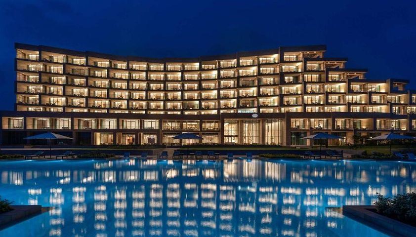
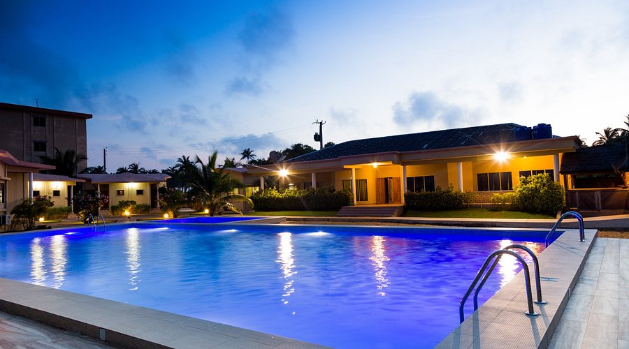
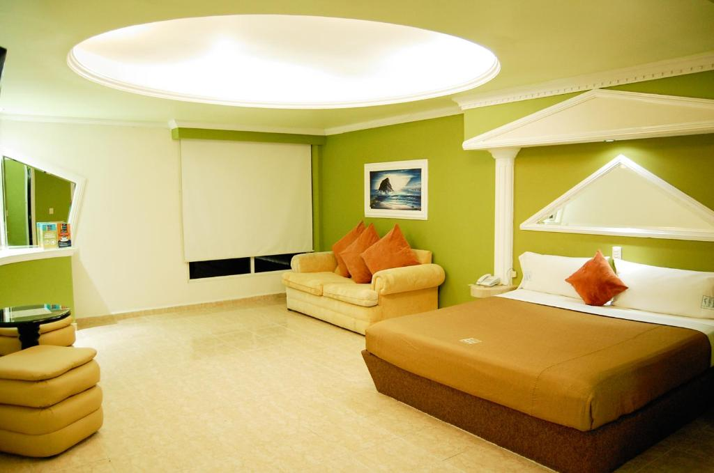
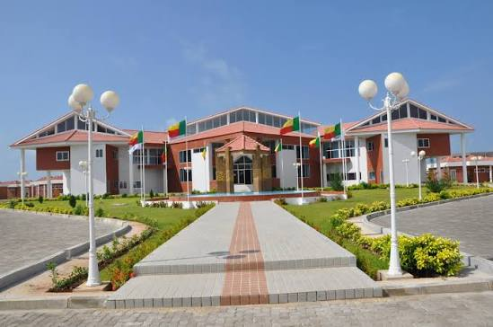

01 / Cotonou
Le mouvement de la ville
Entre les adresses contemporaines, les tables locales et le front de mer, Cotonou est une première escale vive et confortable.
→Des hébergements choisis pour vous faire vivre chaque destination avec justesse.
Chaque séjour se construit avec une adresse adaptée à votre rythme, à votre budget et à la personnalité de la ville.

Entre les adresses contemporaines, les tables locales et le front de mer, Cotonou est une première escale vive et confortable.
→
Ouidah invite à ralentir. Nous y recherchons des maisons calmes, proches de la mémoire, de l'art et de l'océan.
→
Dans la capitale historique, l'hospitalité prend le goût des cours ombragées, des façades anciennes et des rencontres sincères.
→
Grand-Popo est la parenthèse côtière: des nuits bercées par l'Atlantique et des journées ouvertes sur le sable.
→